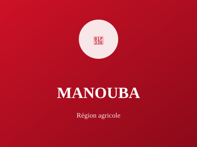

Banlieue ouest de Tunis

Manouba est la banlieue ouest de Tunis et un centre administratif et éducatif important. Elle accueille l'Université de Manouba et plusieurs institutions de formation de haut niveau.